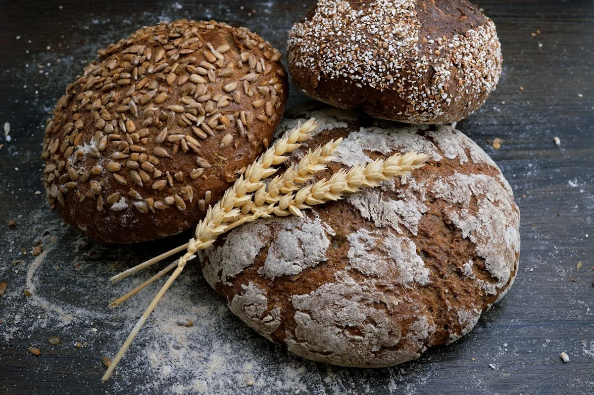

01Web presence
Website Development
Modern, responsive and professional websites that give your business a clear, credible online presence.
- Modern UI/UX
- Responsive design
- Performance focused
KIDEX provides consulting services specialized in the overall technology of wheat and flour processing, bakery products, confectionery and pasta technology.
With 25 years of experience, KIDEX works across wheat and flour production, bakery products, confectionery and pasta technology, helping producers turn experience and innovation into successful projects.
Fine-tuning ingredients, processes and recipes to achieve the highest quality, taste and nutritional value in the final baked goods — improving a product without losing what already makes it work.
Creating and launching new products designed to meet market demands and consumer needs — from early concept through to a formulation ready for production and launch.
KIDEX has excellent competence and technical skills in the use of laboratory equipment for the quality control of wheat and flour, as well as bakery, confectionery and pasta products.
Every KIDEX engagement connects a strong concept to a result that a real team can repeat, measure and improve.

KIDEX is expanding its consulting and solutions work into digital services that help businesses look sharper, get found faster and support customers better.
Modern, responsive and professional websites that give your business a clear, credible online presence.
Physical cards that make it extremely easy for customers to reach your Google review page and share their experience.
AI-powered FAQ and chatbot solutions that answer common questions, share information 24/7 and reduce repetitive support work.
Ready to make your digital presence work harder?
Explore IT SolutionsLooking at the current product or the market gap, and where the opportunity actually sits.
Working through ingredients, process and formulation alongside the producer's own team.
A refined recipe, a new formulation, or a process ready to run on the line.